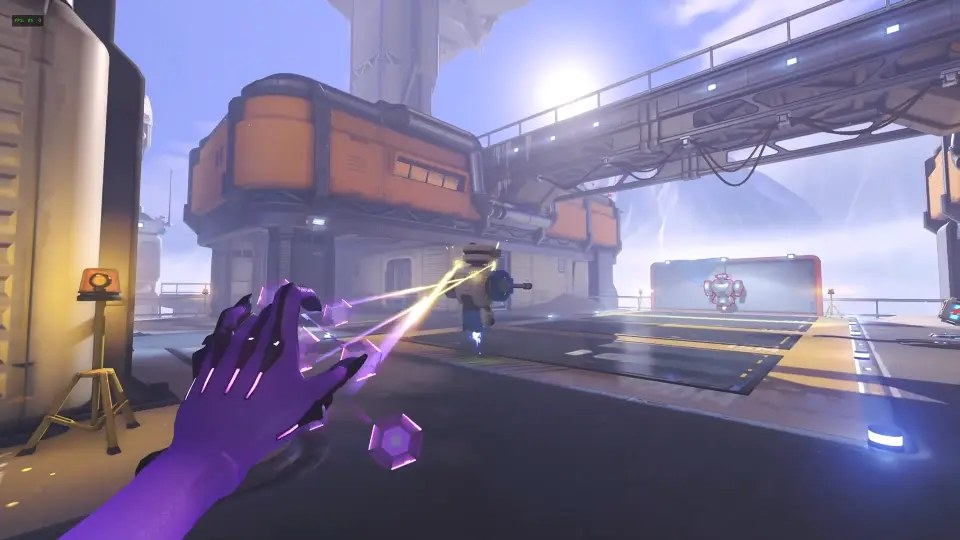
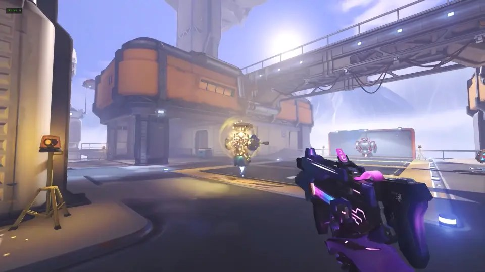
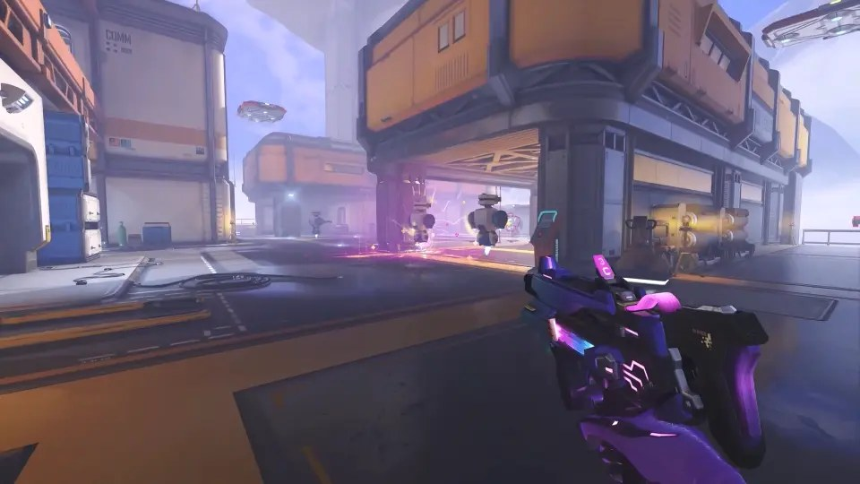
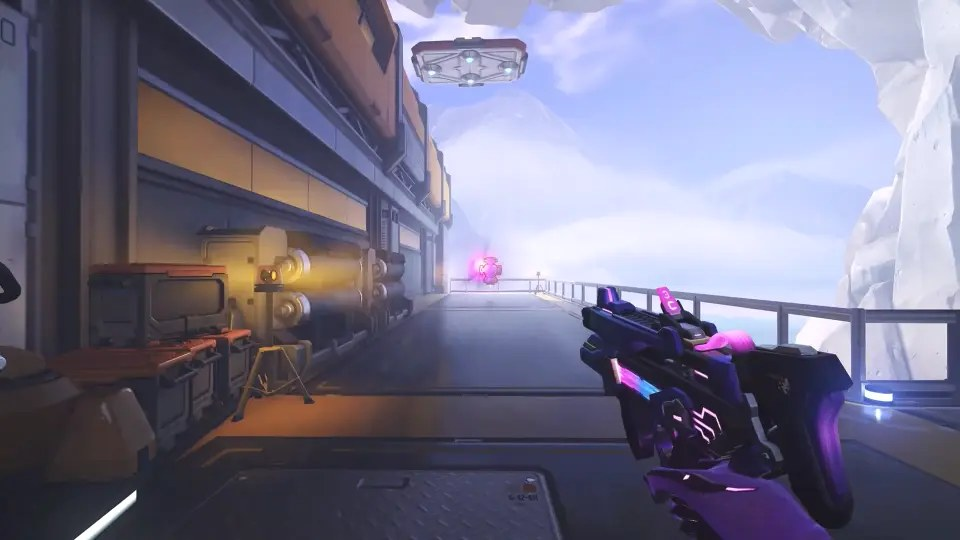

오버워치 솜브라 지원 전환, 5시즌 바뀐 스킬 정리
충전 2회, 최대 200, 12초, 그리고 50%. 5시즌 솜브라의 새 스킬을 설명하는 숫자는 이 네 개로 압축할 수 있습니다. 오버워치 솜브라 지원 전환은 10월 7일에 시작하는 5시즌 대규모 영웅 개편의 한 축으로, 해킹과 바이러스가 통째로 빠지고 아군에게 거는 Hotfix와 구역을 만드는 Cyberspace가 그 자리를 채웁니다. 블리자드 공식 소식과 블리즈컨 개발진 인터뷰 기사를 나란히 열어 무엇이 빠지고 무엇이 들어오는지, 그래서 솜브라 운용이 어떻게 달라지는지를 한 번에 볼 수 있게 정리했습니다.
블리즈컨 2026 공개 시점 기준 정리이며, 수치는 5시즌 공식 패치노트에서 달라질 수 있습니다.

블리즈컨 체험 영상 속 솜브라의 Hotfix 사용 장면입니다.
이미지: 블리즈컨 2026 체험 영상 화면(©Blizzard Entertainment), 인벤 9월 13일자 기사 수록분
오버워치 솜브라 지원 전환, 공식 소식이 밝힌 범위
| 확인한 곳 | 담겨 있는 내용 |
|---|---|
| 블리자드 공식 소식 | 솜브라와 로드호그가 5시즌 대규모 영웅 개편의 주인공, 솜브라 역할이 공격에서 지원으로 변경, 5시즌은 10월 7일 시작 |
| 블리즈컨 개발진 인터뷰(인벤, 9월 13일) | 삭제·추가·유지 스킬 구분, Hotfix와 Cyberspace의 수치, 개편 이유 |
| 한국어 패치노트 목록(10월 7일 확인) | 가장 최근 항목이 9월 23일자이며 5시즌 솜브라 변경 내용은 아직 없음 |
출처: 블리자드 오버워치 한국어 소식 · 패치노트 페이지 · 인벤 웹진 기사(2026.09.13)
공식 쪽부터 확인했습니다. 블리자드 오버워치 소식은 솜브라와 로드호그를 5시즌 대규모 영웅 개편의 주인공으로 소개하면서, 이번 개편으로 솜브라의 역할이 공격에서 지원으로 바뀐다고 밝혔습니다. 한국어 공식 소식은 역할 변경과 시즌 시작일까지만 짚고 있어서, 스킬 이름과 수치는 블리즈컨 오버워치 패널에서 알렉 도슨 어소시에이트 게임 디렉터가 직접 설명한 내용을 정리한 인벤 기사가 기준이 됩니다.
그래서 확인을 한 단계 더 거쳤습니다. 10월 7일 새벽, 5시즌 적용을 앞둔 시점에 한국어 패치노트 목록을 열어 보니 가장 최근 항목이 9월 23일자 버그 수정 업데이트였고, 5시즌 솜브라 변경 내용은 아직 올라와 있지 않았습니다. 이 글에 쓴 수치는 모두 블리즈컨 공개 시점 값이고, Hotfix와 Cyberspace는 인벤 기사가 영문 그대로 쓴 표기를 따랐습니다. 한국어 패치노트가 올라오면 한글 명칭과 수치가 정해지거나 바뀔 수 있으니, 그때 한 번 더 대조해 보시길 권합니다.
솜브라 5시즌 변경점, 삭제·추가·유지 한눈에 보기
| 구분 | 스킬 | 내용 |
|---|---|---|
| 삭제 | 해킹 | 기존에는 누르고 있으면 적을 해킹해 기술 사용을 막고 벽 너머에서도 보이게 하던 스킬 |
| 삭제 | 바이러스 | 기존에는 지속 피해를 주는 투사체로 적을 감염시키던 스킬 |
| 추가 | Hotfix | 아군에게 지속 치유를 거는 스킬. 충전 2회, 치유 총량 최대 200, 최대 12초 유지 |
| 추가 | Cyberspace | 착탄 지점에 구역을 만드는 스킬. 구역 안 적은 받는 치유량과 주는 피해량이 각각 50% 감소 |
| 유지 | 기관권총 | 기본 무기로 이어짐(인벤 기사 표기는 기관단총) |
| 유지 | 위치변환기 | 사거리는 짧아졌지만 순간이동하며 사라지는 감각은 그대로 |
| 유지 | EMP | 궁극기로 사실상 그대로 유지 |
기존 스킬 설명은 오버워치 공식 영웅 소개 페이지(솜브라), 변경 내용은 인벤 기사 기준. 스킬명은 영웅 소개 페이지의 한국어 표기와 인벤 기사의 영문 표기를 그대로 썼습니다.
표만 보면 키트의 절반이 바뀝니다. 다섯 가지 능력 가운데 기본 무기, 위치변환기, 궁극기 EMP는 남고 해킹과 바이러스 두 개가 새 스킬로 교체되는 구조입니다. 남는 세 가지는 솜브라가 솜브라로 읽히게 하는 뼈대라서, 개발진도 정체성은 유지하면서 새 즐길 거리를 넣었다고 설명했습니다.
교체의 이유는 인터뷰에서 비교적 분명하게 나옵니다. 도슨 디렉터는 솜브라를 출시 이후 줄곧 논쟁의 중심에 있던 영웅으로 규정했고, 개편을 시작하며 팀이 내린 결론은 은신, 살상력, 해킹의 침묵 효과가 이루는 삼각 구도를 깨야 한다는 것이었습니다. 그러려면 큰 폭의 변화가 필요했고, 그 답이 역할군 이동이었다는 설명입니다. 지원 영웅으로 옮기면 기존 스킬의 재미있는 부분을 살리면서 유틸리티가 더 어울리는 자리에 놓을 수 있다는 판단도 함께 나왔습니다.
공식 영웅 소개 페이지를 열어 기존 설명을 다시 읽어 보니, 해킹은 적의 기술을 막는 스킬이고 바이러스는 적에게 피해를 주는 스킬이었습니다. 두 개 모두 주로 적을 향한 스킬이었다는 점이 이번 교체의 출발점으로 보입니다. 새로 들어오는 두 스킬은 하나는 아군을 향하고 다른 하나는 구역 전체를 향합니다. 같은 자리에서 방향만 바뀐 것이 아니라 스킬이 일하는 대상 자체가 달라졌습니다.
Hotfix, 해킹 자리에 들어온 아군 지속 치유

해킹 대신 들어오는 Hotfix 적용 장면입니다. 아군에게 지속 치유를 부여합니다.
이미지: 블리즈컨 2026 체험 영상 화면(©Blizzard Entertainment), 인벤 9월 13일자 기사 수록분
| 항목 | 내용 |
|---|---|
| 대체 대상 | 해킹 |
| 효과 | 아군에게 지속 치유 부여 |
| 충전 | 2회 |
| 치유 총량 | 최대 200 |
| 유지 시간 | 최대 12초 |
| 치유 방식 | 적용 순간 즉시 치유가 들어가지만 가치 대부분은 지속 치유 쪽 |
출처: 인벤 웹진 블리즈컨 오버워치 패널 정리 기사(2026.09.13), 블리즈컨 공개 시점 수치
Hotfix는 이번 개편에서 솜브라를 지원 영웅으로 읽히게 만드는 핵심 스킬입니다. 충전을 두 번 가지고 있고, 걸린 아군은 최대 12초에 걸쳐 총 200까지 치유를 받습니다. 적용하는 순간 즉시 들어가는 치유도 있지만 개발진은 가치의 대부분이 지속 치유에 있다고 설명했으니, 순간 회복이라기보다 교전 전에 걸어 두는 도구에 가깝습니다.
개발진이 직접 꼽은 활용 장면은 선제 운용입니다. 아군이 과감하게 파고들기 직전에 미리 걸어 두면 교전이 시작된 뒤에 허둥대지 않아도 됩니다. 다만 충전이 2회라 한꺼번에 걸 수 있는 횟수에 한계가 있고, 어느 타이밍에 누구에게 쓸지가 곧 솜브라 플레이어의 판단이 될 것입니다. Hotfix가 몇 초마다 다시 차오르는지는 공개된 자료에 나오지 않아서 이 글에서는 다루지 않았습니다.
눈여겨볼 대목은 또 있습니다. 개발진은 솜브라가 다른 지원 영웅만큼 치유에 매달릴 필요가 없다고 말했고, 그래서 혼자 떨어져 나가 적진을 파고들 여지가 남는다고 설명했습니다. 치유 전담이 아니라 치유 수단을 하나 쥔 채 은신과 침투를 이어 가는 지원 영웅을 그리고 있다는 뜻으로 읽힙니다. 기관권총은 그대로 남기 때문에, 총을 쏘다가 틈틈이 Hotfix를 거는 흐름이 기본이 될 것으로 보입니다.
Cyberspace, 바이러스를 대체한 구역형 스킬

바이러스 대신 들어오는 Cyberspace 장면입니다. 착탄 지점에 구역이 만들어집니다.
이미지: 블리즈컨 2026 체험 영상 화면(©Blizzard Entertainment), 인벤 9월 13일자 기사 수록분
| 항목 | 내용 |
|---|---|
| 대체 대상 | 바이러스 |
| 방식 | 단일 대상에게 피해를 주던 방식에서 벗어나 착탄 지점에 구역을 생성 |
| 아군 | 구역 안에서 치유 |
| 적 | 구역 안에서 피해를 받고 약화 상태가 됨 |
| 약화 내용 | 받는 치유량 50% 감소, 주는 피해량 50% 감소 |
| 개발진이 든 용도 | 체력이 낮은 적 마무리, 적 궁극기의 위력 약화, 아군에게 유리한 교전 구역 만들기 |
출처: 인벤 웹진 블리즈컨 오버워치 패널 정리 기사(2026.09.13), 블리즈컨 공개 시점 수치
Cyberspace는 바이러스의 자리를 이어받았지만 성격은 꽤 다릅니다. 바이러스가 한 명에게 지속 피해를 주는 투사체였다면, Cyberspace는 던진 곳에 구역을 만들어 아군을 치유하고 적에게 피해를 줍니다. 구역 안에 들어온 적은 약화 상태가 되고, 받는 치유량과 주는 피해량이 각각 50% 줄어듭니다. 두 수치가 같은 50%라서 기억하기는 쉽습니다.

Cyberspace는 구역 안의 적에게 약화 상태를 줍니다.
이미지: 블리즈컨 2026 체험 영상 화면(©Blizzard Entertainment), 인벤 9월 13일자 기사 수록분
활용처로 개발진이 직접 든 것은 세 가지입니다. 체력이 낮은 적을 마무리하는 용도, 적 궁극기의 위력을 떨어뜨리는 용도, 아군에게 유리한 교전 구역을 만드는 용도입니다. 주는 피해량이 절반으로 줄어드는 구역이라면 상대 궁극기가 쏟아지는 순간에 구역을 깔아 두는 쓰임새가 자연스럽게 떠오릅니다. 받는 치유량이 줄어드는 효과는 이미 체력이 깎인 적을 끝내는 쪽과 맞아떨어집니다.
구역의 크기와 지속 시간, 재사용 대기시간은 제가 확인한 자료에 없었습니다. 그래서 얼마나 넓게 깔리고 얼마나 오래 남는지는 말하지 않겠습니다. 체험 영상 속 장면은 착탄 지점 주변이 보라색 빛으로 물드는 모습이었고, 5시즌 패치노트가 올라오면 이 부분 수치가 가장 먼저 눈에 들어올 것 같습니다.
그래서 솜브라 운용은 어떻게 달라지나
| 운용 요소 | 기존 공격 솜브라 | 5시즌 지원 솜브라 |
|---|---|---|
| 적 대응 | 해킹으로 기술 봉쇄, 바이러스로 지속 피해 | 해킹·바이러스 삭제, Cyberspace로 구역 약화(받는 치유량·주는 피해량 각 50% 감소) |
| 아군 지원 | 해킹한 생명력 팩이 더 빨리 재생성되는 간접 지원 위주(공식 영웅 소개 기준) | Hotfix로 아군에게 지속 치유(충전 2회, 최대 200, 최대 12초) |
| 침투·이동 | 위치변환기와 은신 | 위치변환기 유지, 사거리 단축 |
| 궁극기 | EMP | EMP 사실상 유지 |
| 역할 성격 | 공격 영웅 | 지원 영웅 |
출처: 오버워치 공식 영웅 소개 페이지(솜브라), 인벤 웹진 기사(2026.09.13)
정리하면 솜브라의 한 판은 적을 직접 괴롭히던 구조에서 아군 교전을 미리 받쳐 주고 구역으로 판을 기울이는 구조로 옮겨 갑니다. 해킹 기술이 삭제됐으니 해킹으로 상대의 핵심 기술을 끊어 놓고 들어가던 방식은 사라지고, 그 빈자리를 Hotfix의 선제 치유와 Cyberspace의 약화 구역이 메웁니다. 무엇을 얻고 무엇을 포기했는지가 분명한 개편이라는 인상을 받았습니다.
위치변환기는 눈여겨볼 부분입니다. 개발진은 사거리가 짧아졌어도 전술적으로 사라지는 감각은 그대로라고 했습니다. 먼 곳으로 한 번에 빠지던 동선은 줄어들 가능성이 있지만, 얼마나 짧아졌는지 수치가 공개되지 않아 체감은 5시즌에서 직접 확인해야 합니다. 치유를 위해 아군 곁에 붙어야 하는 시간이 늘면 이동 스킬의 역할도 자연히 바뀔 텐데, 개발진은 새 역할과 기술에 적응하는 데 시간이 걸리겠지만 감을 잡고 나면 상당히 재미있을 것이라고 말했습니다.
같은 5시즌에 로드호그 개편도 함께 예고되어 있고, 독트린까지 세 영웅의 방향이 치유와 지원을 후방에만 묶어 두지 않는 쪽으로 향한다는 것이 인터뷰의 정리였습니다. 솜브라를 자주 쓰던 분이라면 5시즌 첫 주에 Hotfix의 선제 운용과 Cyberspace를 까는 타이밍부터 연습해 보시면 좋겠습니다. 솜브라를 상대하는 쪽이라면 구역에 들어가면 주는 피해량이 절반으로 줄어든다는 점부터 기억해 두시면 좋겠습니다.
해킹과 바이러스가 빠지고 Hotfix와 Cyberspace가 들어오면서, 솜브라는 적을 끊는 영웅에서 아군 교전을 받치는 영웅으로 자리를 옮깁니다.
솜브라는 10월 7일 시작하는 5시즌에 공격 영웅에서 지원 영웅으로 바뀌고, 해킹과 바이러스가 삭제되는 대신 Hotfix(충전 2회, 치유 총량 최대 200, 최대 12초)와 Cyberspace(착탄 지점 구역, 적의 받는 치유량·주는 피해량 각 50% 감소)가 추가됩니다. 기관권총, EMP, 위치변환기(사거리 단축)는 유지되며, 수치는 블리즈컨 공개 시점 기준이라 5시즌 한국어 패치노트에서 달라질 수 있습니다.
5시즌 한국어 패치노트가 올라오면 스킬 한글명과 수치부터 다시 대조해 보시기를 권합니다. 솜브라가 어떤 자리에서 쓰이게 될지는 시즌이 시작되고 나서야 윤곽이 나올 것이라 이 글도 그 시점에 맞춰 다시 확인하시면 좋겠습니다. 포스팅은 여기서 마치겠습니다.
#오버워치 #오버워치솜브라 #솜브라지원 #오버워치5시즌 #솜브라리워크 #솜브라Hotfix #솜브라Cyberspace #오버워치패치 #오버워치업데이트